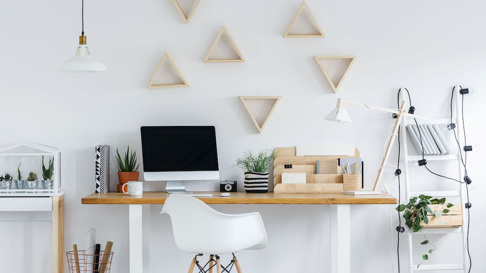

Setting Up Your Workspace
We all know the saying "A tidy room, is a tidy mind". There's no reason why this can't apply to your workspace, also. With college being online for the forseeable future, it's important to have a space you can use to attend classes, do coursework, and study in comfortably without distracton. It's also important to create a space that you can step away from at the end of the day.
In this section, we will look at ways you can decorate and organize your space more efficiently, to help you stay on track.
Step 1: Choosing your space
Having the same space to go to each day to do your work is an important part in helping yourself to adjust to the new way of college and develop a routine. Choosing a space outside of your own bedroom, with a door you can close to keep family and pets out is ideal, but may not always be feasible. If this is not doable for you, set a small section of your room aside to dedicate to a neat and tidy work area.
Step 2: Decorating
Decorations are very subjective, however, in this case, it my be best to go with a more minimalistic approach. The less items you have cluttering your space and immediate line of sight and potentially distracting you from your work, the better.
Take some time to tidy up your desk space - dusting and removing clutter. Everything that is on your desk should have it's own place. If you're struggling to find a spot, some compact desk storage may be a good idea - we like these two here:
Step 3: Getting Comfortable
Being comfortable in your space is almost as important as organization. If you can't invest in a good chair - make sure you use a cushion to help you keep good posture during your long days. Staying slouched over your desk won't be productive to study or maintaining focus.
A well ventilated room is very important - so be sure to open your window throughout the day for some air. You should be stepping out of your room every few hours for a break from the screen regardless, but a badly ventilated room can lead to headaches and a lack of concentration.
A small plant to keep you company will also remind you to open the blinds and windows for some sun and air, as well as to get some water for both of you!
Wrist rests can be found inexpensive on Amazon. When you're not used to sitting at a computer all day, it can get very tiring very fast. Something like this can help you keep up with any assignments you may have due.